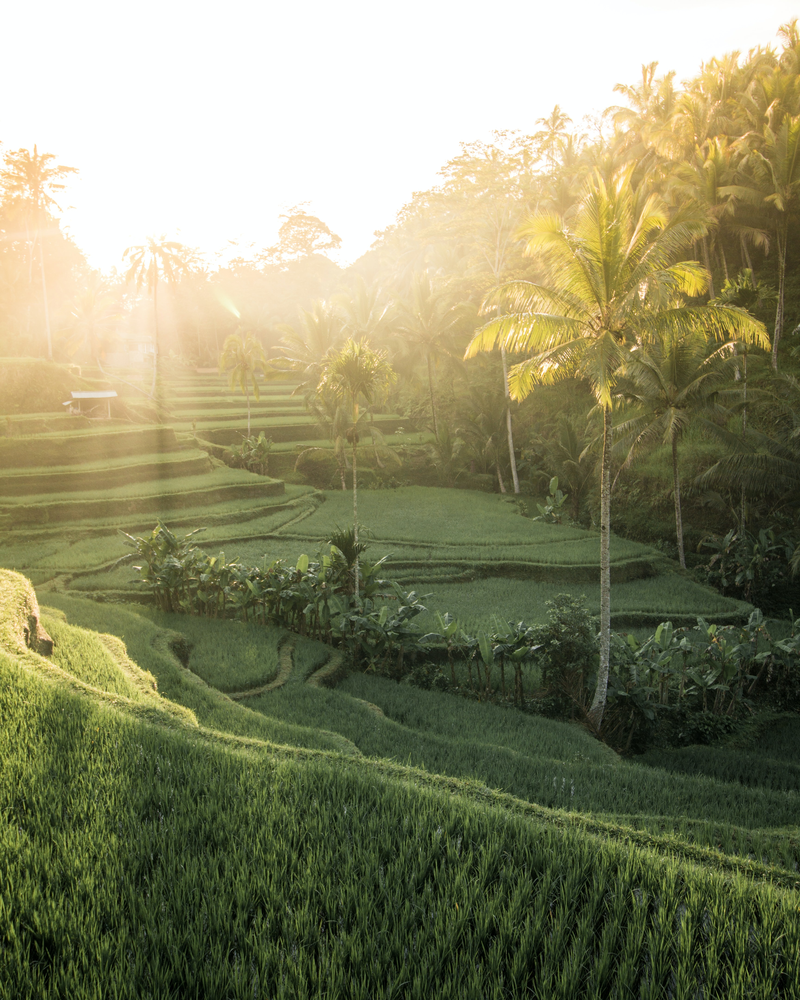
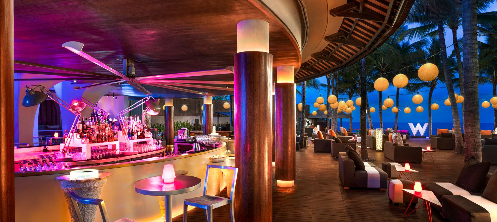

A sacred monkey sanctuary, this iconic tourist attraction is home to the long-tailed Macaques monkeys. It’s an
ancient temple compound surrounded by a large forest, which makes a beautiful place to tour, take awesome
pictures, and interact with these mischievous creatures. The monkeys run freely around the forest so visitors
get to see them in their natural behavior.
Just make sure to follow along with their website for guidelines and FAQs of important things you should know
before you go!
ADDRESS: Jl. Monkey Forest, Ubud, Kecamatan Ubud, Kabupaten Gianyar, Bali 80571, Indonesia
OPEN DAILY: 8:30 AM - 6:00 PM
ENTRANCE FEE: ADULT IDR 80,000=$5.55 USD CHILD IDR 60,000=$4.17 USD
PERFECT FOR ALL AGE GROUPS!

Tegallalang Rice Terrace-Ubud
The Tegalalang Rice Terrace or also known as Ubud rice field is located north of Ubud. These rice fields are
famous for their beautiful scenes of rice paddies and their innovative irrigation system. The water itslef comes
from surrounding rivers & mountains. Farmers built these water canals to allow the water to flow from one field
to the other. The best times to visit is probably in the morning or after 5:00 pm when there are the least
number of tourists & when it’s not so hot.
ADDRESS: Jl. Raya Tegallalang, Tegallalang, Kec. Tegallalang, Kabupaten Gianyar, Bali 80561, Indonesia
OPEN DAILY: 7:00 AM - 6:00 PM
ENTRANCE FEE: IDR 15,000=$1.04 USD
PERFECT FOR ALL AGE GROUPS!
Ulun Danu Bratan-
Tabanan
Pura Ulun Danu Bratan, or Pura Bratan, is a beautiful water temple that is located in the mountain highlands
near Bedugul on the shores of Lake Bratan. This temple was built around 1663 and is used to worship the lake and
river goddess Dewi Danu. This place is known to have one of the most beautiful temples here in Bali. This will
be an unforgettable experience so make sure to take advantage of this beautiful scenery! Also, be sure to buy
wild strawberries on the way from local vendors, it tastes dreamy!
ADDRESS: Danau Beratan, Candikuning, Baturiti, Tabanan Regency, Bali 82191, Indonesia
OPEN DAILY: 7:00 AM - 7:00 PM
ENTRANCE FEE: IDR 50,000=$3.47 USD
PERFECT FOR ALL AGE GROUPS!
Nusa Penida Island
The beautiful, exotic Nusa Penida island lies just 25 kilometers from Bali, it is known as the most famous
tourist destination in Indonesia. Mainly because this island is a dream come true for any photographer. There
are so many sights to see and so much to do on this island. From snorkeling to walking the trails and beaches,
its easy to spend an entire day enjoying all of it. From Bali, the only way to reach Nusa Penida is by speedboat
or ferry, with the speedboat journey taking about 45 minutes or so.
There are a bunch of speedboat companies making this trip daily, and they all depart from Sanur Beach in Bali at
various times.
This is the main attraction when it comes to showing off on your instagram!
ADDRESS: Nusa Penida Island, Bali Indonesia
ENTRANCE FEE: Depends on which boating company you decide to take
PERFECT FOR AGE GROUPS 16+!

Woobar Bali in
Seminyak & Petitenget
From sunrise to sunset, WOOBAR Bali is the ultimate destination in Bali to eat, drink, play. Lounge around the
pool or perch on the sky deck with comfort foods featuring the flavors of the Mediterannean and Indonesia. This
is the place to go whether you just want to relax on the beach or have a drink while enjoying dinner. Just a
heads up! Make sure to head over to their website to make a reservation!
ADDRESS: Jl. Petitenget, Seminyak - Kerobokan, Bali, Indonesia 8036
Denpasar, Indonesia